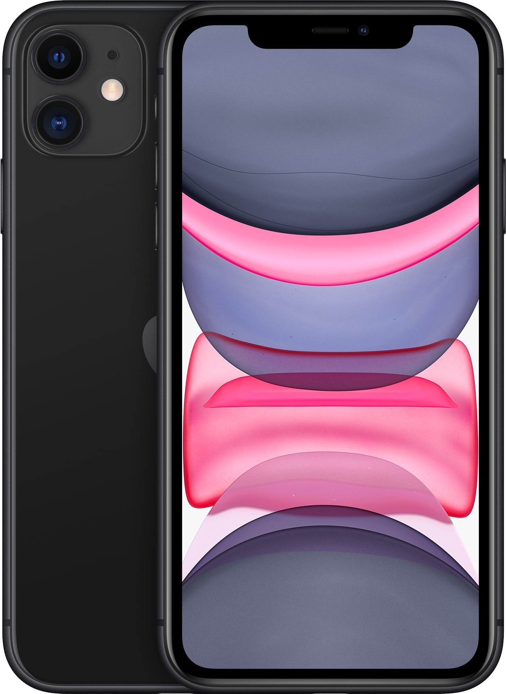
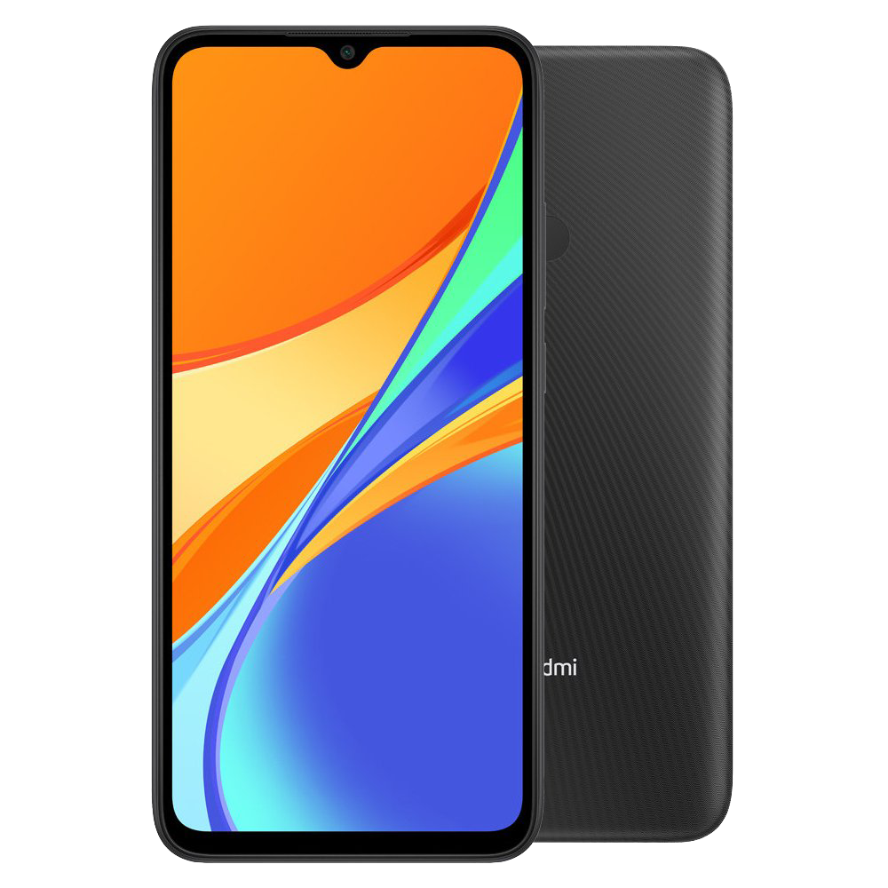
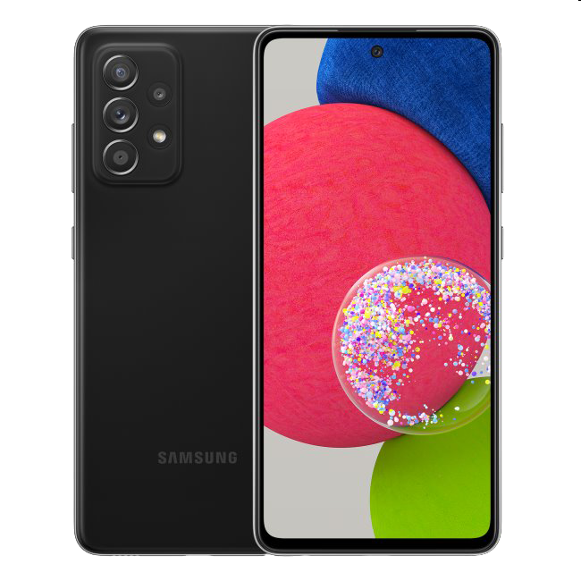
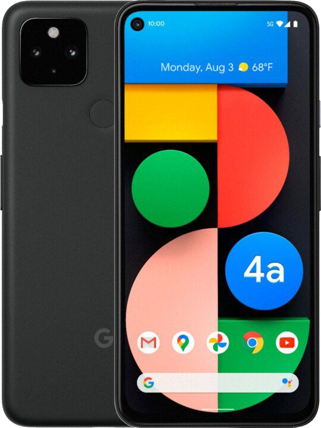
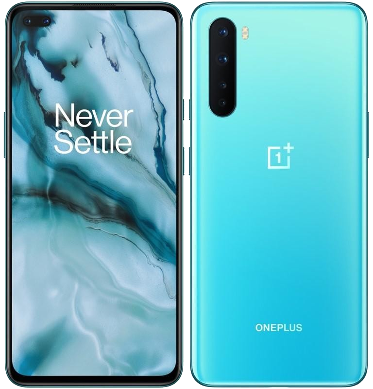

iPhone 11 64 GB
- Popis
- Hlavným lákadlom, na ktorý sa spoločnosť Apple najviac zamerala, je dlho očakávaná fotosústava so širokouhlým a ultraširokouhlým záberom, ktorá vám dovolí zachytiť scénu v celej svojej kráse a navyše poskytne až dvojnásobný optický zoom. Okrem toho ponúkne úchvatný nočný režim, s ktorým môžete fotiť aj v hlbokej tme. Pozadu nezostalo ani video s rozlíšením 4K pri 60 snímkach za sekundu či spomalený režim s až 240 snímkami vo Full HD.
Kľúčové vlastnosti:
- Uhlopriečka displeja 6,1" (15,49 cm)
- Rozlíšenie displeja 1792 × 828
- Operačná pamäť 4 GB
- Rozlíšenie kamery 12 Mpx
- Jemnosť displeja 326 PPI
- Kapacita batérie 3 110 mAh
- Frekvencia procesora 2,65 GHz (2 650 MHz)
- Typ objektívu Širokouhlý, Teleobjektív
- Optická stabilizácia obrazu
- Typ displeja IPS
3000€

Xiaomi Redmi 9C 64GB
- Popis
- Chytrý telefón Redmi 9C od značky Xiaomi vás odprevadí na každom kroku. Je vybavený vysokokapacitnou batériou s 5 000 mAh, duálnym fotoaparátom s umelou inteligenciou i nadupaným výkonom. Nechýba mu kvalitný displej s HD+ rozlíšením, dotykové odomykanie ani herná technológia pre realistické zážitky z hrania hier.
Kľúčové vlastnosti:
- Uhlopriečka displeja 6,53" (16,59 cm)
- Rozlíšenie displeja 1600 × 720
- Operačná pamäť 3 GB
- Rozlíšenie fotoaparátu 13 Mpx
- Jemnosť displeja 269 PPI
- Kapacita batérie 5 000 mAh
- Frekvencia procesora 2,3 GHz (2 300 MHz)
- Typ objektívu Makro
- Typ displeja IPS
- Typ pamäťovej karty MicroSD
1500€

Samsung Galaxy A52s 5G
- Popis
- Spoločnosť Samsung patrí na poli inteligentných mobilných telefónov medzi svetové špičky a svoje postavenie dokazuje aj v prípade Galaxy A52s 5G. Telefónu na prednej strane dominuje veľký 6,5" Super AMOLED displej s extra tenkými rámikmi, ktoré dávajú zariadeniu luxusný vzhľad, ktorý dopĺňa aj vstavaná kruhová selfie kamera v prednej časti obrazovky.
Kľúčové vlastnosti:
- Uhlopriečka displeja 6,5" (16,51 cm)
- Rozlíšenie displeja 2400 × 1080
- Operačná pamäť 6 GB
- Rozlíšenie kamery 64 Mpx
- Jemnosť displeja 407 PPI
- Kapacita batérie 4 500 mAh
- Frekvencia procesora 2,4 GHz (2 400 MHz)
- Typ objektívu Širokouhlý, Makro
- Typ displeja AMOLED
- Typ pamäťovej karty MicroSD
900€

Google Pixel 4a
- Popis
- Pixel 4a asi nie je potrebné predstavovať. Pixely sa zameriavajú hlavne na kvalitu fotoaparátov a Google je známy svojim magickým softvérovým spracovaním fotiek. Okrem fotoaparátu tento model zaujme aj svojou veľkosťou, ako jeden z mála má uhlopriečku displeja menšiu ako 6 palcov.
Kľúčové vlastnosti:
- Uhlopriečka displeja 5,8" (14,73 cm)
- Rozlíšenie displeja 2340 × 1080
- Operačná pamäť 6 GB
- Rozlíšenie fotoaparátu 12 Mpx
- Jemnosť displeja 443 PPI
- Kapacita batérie 3 140 mAh
- Frekvencia procesora 2,2 GHz (2 200 MHz)
- Typ displeja OLED
- Stabilizácia obrazu Optická, Elektronická
- Konfigurácia kariet Single SIM + eSIM
1300€

OnePlus Nord2 5G 128GB1
- Popis
- smartfón • 6,43" uhlopriečka • AMOLED displej • 2400 × 1080 px • obnovovacia frekvencia 90 Hz • procesor MediaTek Dimensity 1200-AI (8-jadrový – až 3,0 GHz) • pamäť RAM 8 GB • interná pamäť 128 GB • Bluetooth • 5G • GPS • Wi- Fi • USB-C • odomykanie pomocou odtlačku prstov • Android 11 • kapacita batérie 4 500 mAh
Kľúčové vlastnosti:
- Uhlopriečka displeja 6,43" (16,33 cm)
- Rozlíšenie displeja 2400 × 1080
- Operačná pamäť 8 GB
- Rozlíšenie kamery 50 Mpx
- Jemnosť displeja 410 PPI
- Kapacita batérie 4 500 mAh
- Frekvencia procesora 3 GHz (3 000 MHz)
- Typ displeja AMOLED
- Typ objektívu Širokouhlý
- Stabilizácia obrazu Optická, Elektronická